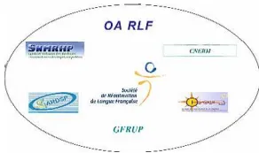
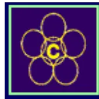
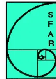

Organisme Agréé de Réanimation de langue Française
Société de Réanimation de Langue Française
Collège Français des Anesthésistes Réanimateurs
Société Française d'Anesthésie Réanimation
CRITERES D'EVALUATION ET D'AMELIORATION
DES
PRATIQUES PROFESSIONNELLES:
Proposition d'un programme d'EPP « clés en main » : audit clinique
Ventilation Non Invasive
au cours de l'insuffisance respiratoire aiguë
(nouveau-né exclu)
VERSION 1 : DECEMBRE 2007
Ce document est la propriété intellectuelle des deux OA OARLF et CFAR.
Son utilisation nécessite leur accord préalable
Un programme d'évaluation des pratiques professionnelles (EPP) consiste en l'analyse des pratiques professionnelles en référence à des recommandations et selon une méthode élaborée ou validée par la Haute Autorité de Santé (HAS). Le programme comporte ensuite, obligatoirement, la mise en œuvre et le suivi d'actions d'amélioration des pratiques. L'HAS propose de nombreuses méthodes pour les programmes d'EPP. Les guides d'utilisation de ces méthodes sont téléchargeables gratuitement sur le site de la Haute Autorité de santé (http://www.has-sante.fr). Les critères d'évaluation et d'amélioration des pratiques reposent sur des objectifs de qualité à atteindre. Ils sont sélectionnés dans des recommandations professionnelles valides ou dans des textes réglementaires. Les critères d'évaluations sont des éléments plus concrets permettant de voir si on a atteint les objectifs. L'utilisation de ces critères est précisée dans l'annexe I
L'organisme Agréé de Réanimation de langue Française
La société de Réanimation de langue Française
Le Collège Français des Anesthésistes Réanimateurs
La Société Française d'Anesthésie- Réanimation
Le document de référence principalement sélectionné par le groupe de travail a été le texte de la conférence de consensus de 2006, organisée par la SRLF, la SFAR , la SPLF, avec la participation de la SFMU et SAMU DE FRANCE et du GFRUP.
Le système choisi pour la cotation des recommandations de la conférence est le système GRADE. Dans ce système, seuls les éléments majeurs sont cotés. Les niveaux de preuves (haut niveau, niveau intermédiaire, bas et très bas niveaux) sont pondérés par différents éléments, dont la balance bénéfices/risques. Les recommandations sont intégrées au texte de la façon suivante : « il faut faire (G1+) ou il ne faut pas faire (G1-); il faut probablement faire (G2+) ou il ne faut probablement pas faire (G2-) ».
Médecins réanimateurs, anesthésistes réanimateurs, pneumologues et urgentistes.
Le programme d'EPP proposé concerne la VNI mise en œuvre chez des malades en insuffisance respiratoire aiguë pris en charge par un service de réanimation adulte. Il peut être adapté pour d'autres spécialités
Audit clinique ciblé rétrospectif portant sur la structure et 20 dossiers de patients
Information du programme EPP apportée à l'ensemble de l'équipe médicale. Lecture par chacun de ce document.
Appropriation des critères
Tirage au sort de 20 dossiers patients
Remplissage de la grille d'évaluation.
Synthèse de l'audit exposée à l'équipe médicale par un médecin
Discussion et décisions pour modifier les pratiques,
Nouvel audit ou suivi d'indicateurs
1. L'équipe médicale dispose de protocoles de mise en œuvre de la VNI dans les situations d'insuffisance respiratoire aiguë rencontrées, écrits, validés et adaptés à la pathologie et à la gravité des patients pris en charge.
2. L'équipe dispose des moyens nécessaires à la mise en œuvre de la VNI :
3. Les équipes médicales et para-médicales sont formées (formation théorique et pratique) à la technique.
4. L'indication de la VNI est reportée dans le dossier médical.
5. En fonction des particularités liées au terrain et à la pathologie du patient le rapport bénéfices/risques de la VNI est discuté et renseigné dans le dossier médical.
6. Les conditions de mise en œuvre (interface, réglages ventilatoires, périodicité des séances) sont conformes au protocole du service et sont mentionnées dans la prescription médicale.
7. Les traitements spécifiques à la pathologie sous-jacente sont appliqués parallèlement et sans délai.
8. Les paramètres d'une surveillance clinique et paraclinique (Vte, FR) rapprochée pendant les premières heures figurent sur la prescription médicale et sont reportés sur le dossier de surveillance infirmière.
9. L'oxymétrie de pouls est monitoré en continu et la SpO2 est régulièrement relevée.
10. Une gazométrie artérielle est disponible au plus tard dans les 1 à 2 heures suivant le début de la VNI.
11. Les raisons de l'échec de la VNI sont reportées dans l'observation médicale.
12. Les complications et les effets indésirables liés à la VNI sont reportés dans le dossier médical et font l'objet d'une stratégie de prévention.
Critères portant sur la structure (une seule réponse par critère) :
L'équipe médicale dispose de protocoles de mise en œuvre de la VNI dans les situations d'insuffisance respiratoire aiguë rencontrées, écrits, validés et adaptés à la pathologie et à la gravité des patients pris en charge.
Répondre OUI s'il existe dans la structure un protocole écrit correspondant aux situations cliniques spécifiques rencontrées dans le secteur d'activité concerné (OAP, BPCO, postopératoire, hématologie, pédiatrie, etc.) et validés.
| Répondre NON si les protocoles ne sont pas disponibles ou n'ont pas été validés.
L'équipe dispose des moyens nécessaires à la mise en œuvre de la VNI :
Répondre OUI si il existe dans la structure : 1° un choix de divers types d'interfaces disponibles en plusieurs tailles pour couvrir largement les spécificités morphologiques des patients; 2° en fonction des patients pris en charge par la structure : des circuits de CPAP et/ou des ventilateurs permettant de délivrer un mode assisté à double niveaux de pression et comportant : le réglage du trigger inspiratoire, de la pente de pressurisation du niveau d'AI, du temps inspiratoire maximal ou du cyclage inspiration/expiration (trigger expiratoire); l'affichage du volume courant expiré et des pressions; 3° pour les structures utilisant des modes assistés en pression, un matériel permettant le monitoring du volume courant expiré, la détection des fuites et des asynchronies patient-ventilateur (courbes de pression-volume sur écran ); 4° Des systèmes d'humidification des gaz inspirés disponibles (humidificateur chauffant ou filtre échangeur de chaleur et d'humidité)
| Répondre NON : si l'équipe ne dispose pas du matériel correspondant aux quatre points spécifiés.
Les équipes médicales et para-médicales sont formées (formation théorique et pratique) à la technique.
Répondre OUI si une formation initiale minimale (théorique et pratique) à la VNI est organisée dans la structure à l'arrivée des nouveaux personnels (médicaux et paramédicaux ?).
Répondre NON si aucune formation spécifique à la VNI n'est organisée dans la structure.
Critères à rechercher dans les 20 dossiers patients analysés (une réponse pour chaque dossier, soit 20 réponses par critère) :
Critère 4 :
L'indication de la VNI est reportée dans le dossier médical.
Répondre OUI si l'indication de la VNI est renseignée dans le dossier médical précisant la pathologie respiratoire à l'origine de l'insuffisance respiratoire aiguë et sa gravité, les critères de la conférence doivent apparaître quand ils ont été précisés (ex pH<7,35 pour BPCO)
Répondre NON s'il manque un des items.
Critère 5 :
En fonction des particularités liées au terrain et à la pathologie du patient le rapport bénéfices/-risques de la VNI est discuté et renseigné dans le dossier médical.
Répondre OUI si le rapport bénéfices/-risques de la VNI est renseignée dans le dossier médical
Répondre NON si le rapport bénéfices/-risques de la VNI n'y figure pas
Critère 6 :
Les conditions de mise en œuvre (interface, réglages ventilatoires, périodicité des séances) sont conformes au protocole du service et sont mentionnées dans la prescription médicale.
Répondre OUI si la prescription médicale précise interface, réglages ventilatoires, périodicité des séances conformément au protocole de la structure.
Répondre NON si la prescription ne détaille pas ces conditions ou si ces conditions de mise en œuvre ne sont pas conformes au protocole.
Critère 7 :
Les traitements spécifiques à la pathologie sous-jacente sont appliqués parallèlement et sans délai.
Répondre OUI si le traitement, en particulier cardiologique (OAP), est débuté préalablement ou simultanément à la VNI
Répondre NON si le traitement spécifique est initié avec délai
Répondre Non Applicable (NA) lorsque la VNI représente le traitement pivot de la détresse respiratoire.
Critère 8 :
Les paramètres d'une surveillance clinique et paraclinique (Vte, FR) rapprochée pendant les premières heures figurent sur la prescription médicale et sont reportés sur le dossier de surveillance infirmière.
Répondre OUI si les paramètres de surveillance (FR, Vte), sont prescrits et figurent sur la feuille de surveillance infirmière.
Répondre NON si les paramètres de surveillance et les conditions de leur recueil ne sont pas prescrits et/ou ne figurent pas sur la feuille de surveillance infirmière
Critère 9 :
L'oxymétrie de pouls est monitorée en continu et la SpO2 est régulièrement relevée
Répondre OUI si l'oxymétrie de pouls est monitorée en continu et la SpO2 est régulièrement relevée
Répondre NON si l'oxymétrie de pouls n'est pas régulièrement relevée
Critère 10 :
Une gazométrie artérielle est disponible au plus tard dans les 1 à 2 heures suivant le début de la VNI. NB: la conférence de consensus n'a pas précisé si les GDS devaient être faits en VNI ou juste après.
Répondre OUI si les résultats de la gazométrie initiale sont reportés dans le dossier médical.
Répondre NON si aucune gazométrie n'a été prescrite et/ou si les résultats de la gazométrie artérielle ne sont pas retrouvés dans le dossier médical.
Répondre Non Applicable si la réalisation de la gazométrie artérielle n'est pas possible techniquement : ex intervention pré-hospitalière.
Critère 11 :
Les raisons de l'échec de la VNI sont reportées dans l'observation médicale.
Répondre OUI si les raisons de l'échec de la VNI conduisant à l'intubation trachéale figurent dans le dossier médical.
Répondre NON si ces raisons ne sont pas retrouvées dans le dossier médical.
Répondre Non Applicable en cas de succès de la VNI.
Critère 12 :
Les complications et les effets indésirables liés à la VNI sont reportés dans le dossier médical et font l'objet d'une stratégie de prévention.
Répondre OUI si les complications et les effets indésirables de la VNI figurent sur l'observation médicale et font l'objet d'une stratégie de prévention
Répondre NON si elles ne sont pas rapportées et/ou ne font pas l'objet d'une stratégie de prévention
Répondre NA si la VNI n'a occasionnée ni complications ni effets indésirables
Notez une seule réponse par case :
O si la réponse est OUI ou présent
N si la réponse est NON ou absent
NA si le critère ne s'applique pas à ce patient ou à votre pratique (précisez dans la zone de commentaires). N'hésitez pas à ajouter des informations qualitatives !
N° d'anonymat :
Date :
Temps passé à cette évaluation :
Critères concernant la structure (une seule réponse par critère) :
| CRITERES | OUI | NON | NA | COMMENTAIRES SI NA OU NON |
|---|---|---|---|---|
|
Critère 1 : L'équipe médicale dispose de protocoles de mise en œuvre de la VNI dans les situations d'insuffisance respiratoire aiguë écrits, validés et adaptés à son secteur d'activité.. |
||||
|
Critère 2 : L'équipe dispose des moyens nécessaires à la mise en oeuvre de la VNI :
|
||||
|
Critère 3. : Les équipes médicales et paramédicales sont formées (formation théorique et pratique) à la technique. |
Notez une seule réponse par case : O si la réponse est OUI (= présent) N si la réponse est NON (= absent) NA si le critère ne s'applique pas à ce patient ou à votre pratique (précisez dans la zone de commentaires). N'hésitez pas à ajouter des informations qualitatives
N° d'anonymat : Date :
Temps passé à cette évaluation
| 1 | 2 | 3 | 4 | 5 | 6 | 7 | 8 | 9 | 10 | Total | |
|---|---|---|---|---|---|---|---|---|---|---|---|
| Critère 4. L'indication de la VNI est reportée dans le dossier médical |
O : N : NA : |
||||||||||
| Critère 5. En fonction des particularités liées au terrain et à la pathologie du patient le rapport bénéfices/-risques de la VNI est discuté et renseigné dans le dossier médical. |
O : N : NA : |
||||||||||
| Critère 6. Les conditions de mise en œuvre (interface, réglages ventilatoires, périodicité des séances) sont conformes au protocole du service et sont mentionnées dans la prescription médicale. |
O : N : NA : |
||||||||||
| Critère 7. Les traitements spécifiques à la pathologie sous-jacente sont appliqués parallèlement et sans délai. |
O : N : NA : |
||||||||||
| Critère 8. Les paramètres d'une surveillance clinique et paraclinique (Vte,FR) rapprochée pendant les premières heures figurent sur la prescription médicale et sont reportés sur le dossier de surveillance infirmière |
O : N : NA : |
||||||||||
| Critère 9. L'oxymétrie de pouls est monitorée en continu et la SpO2 est régulièrement relevée |
O : N : NA : |
||||||||||
| Critère 10. Une gazométrie artérielle est disponible au plus tard dans les 1 à 2 heures suivant le début de la VNI. |
O : N : NA : |
||||||||||
| Critère 11. Les raisons de l'échec de la VNI sont reportées dans l'observation médicale. |
O : N : NA : |
||||||||||
| Critère 12. Les complications et les effets indésirables liés à la VNI sont reportés dans le dossier médical et font l'objet d'une stratégie de prévention. |
O : N : NA : |
| 11 | 12 | 13 | 14 | 15 | 16 | 17 | 18 | 19 | 20 | Total | |
|---|---|---|---|---|---|---|---|---|---|---|---|
| Critère 4. L'indication de la VNI est reportée dans le dossier médical |
O : N : NA : |
||||||||||
| Critère 5. En fonction des particularités liées au terrain et à la pathologie du patient le rapport bénéfices/-risques de la VNI est discuté et renseigné dans le dossier médical. |
O : N : NA : |
||||||||||
| Critère 6. Les conditions de mise en œuvre (interface, réglages ventilatoires, périodicité des séances) sont conformes au protocole du service et sont mentionnées dans la prescription médicale. |
O : N : NA : |
||||||||||
| Critère 7. Les traitements spécifiques à la pathologie sous-jacente sont appliqués parallèlement et sans délai. |
O : N : NA : |
||||||||||
| Critère 8. Les paramètres d'une surveillance clinique et paraclinique (Vte,FR) rapprochée pendant les premières heures figurent sur la prescription médicale et sont reportés sur le dossier de surveillance infirmière |
O : N : NA : |
||||||||||
| Critère 9. L'oxymétrie de pouls est monitorée en continu et la SpO2 est régulièrement relevée |
O : N : NA : |
||||||||||
| Critère 10. Une gazométrie artérielle est disponible au plus tard dans les 1 à 2 heures suivant le début de la VNI. |
O : N : NA : |
||||||||||
| Critère 11. Les raisons de l'échec de la VNI sont reportées dans l'observation médicale. |
O : N : NA : |
||||||||||
| Critère 12. Les complications et les effets indésirables liés à la VNI sont reportés dans le dossier médical et font l'objet d'une stratégie de prévention. |
O : N : NA : |
| Dossiers | Observations et commentaires |
|---|---|
| 1 | |
| 2 | |
| 3 | |
| 4 | |
| 5 | |
| 6 | |
| 7 | |
| 8 | |
| 9 | |
| 10 | |
| 11 | |
| 12 | |
| 13 | |
| 14 | |
| 15 | |
| 16 | |
| 17 | |
| 18 | |
| 19 | |
| 20 |
(Ces indicateurs sont proposés. D'autres indicateurs peuvent être déterminés par l'équipe)
(membres du jury de la conférence)
Bertrand DUREUIL (SFAR) et René ROBERT (SRLF), (chefs de projet)
Christian BENGLER (SRLF)
Pascal BEURET (SRLF)
Gérard GEHAN (SFAR)
Christophe GIRAULT (SRLF)
Frédéric JOYE (SFMU)
Christophe PINET (SPLF)
Fatima RAYEH (SFMU)
Nicolas ROCHE (SPLF)
Jean ROESELER (Kinésithérapeute)
Odile Noizet (Pédiatre SRLF)
Vincent LAUDENBACH (Pédiatre SFAR)
Comité Scientifique d'EPPdu CFAR (Président : Vincent Piriou)
Commission méthodes: (Responsable : Béatrice EON)
membres SFAR :
Dan BENHAMOU
Christian BLERY
Rémi BOCQUET
Jean-Luc FELLAHI
Jean-Claude GRANRY
Philippe MONTRAVERS
Emmanuel SAMAIN
Michel VIGNIER
membres CFAR :
Pierre ALBALADEJO
Béatrice EON
Jean-Philippe CARAMELLA
Paul-Michel MERTES
Commission Programme et Evaluation (Responsable : Hubert le Hetet)
membres SFAR :
Laurent DELAUNAY
Nicolas DUFEU
Elisabeth GAERTNER
Alain LEPAPE
membres CFAR :
Marie-Paule CHARIOT
Marc DAHLET
Jean-Marc DUMEIX
Claude JACQUOT
Pierre PERUCHO
Philippe SCHERPEREEL
Commission des Référentiels et de l'Evaluation (CRE) de L'OARLF:
Igor AURIANT
Nicolas BERCAULT
Thierry BOULAIN
Gilles CAPELLIER
Alain CARIOU
Laurence DONETTI
Alain DUROCHER
Hervé GASTINNE
Claude GERVAIS
Christophe GIRAULT
Christian GOUZES
Stéphane LETAURTE
Thierry LHERM
Philippe MATEU
Jean-Claude RAPHAEL
Marie THUONG GUYOT
Isabelle VINATIER
Groupe de pilotage de l'OARLF (les membres de la CRE ne sont pas re-cités) :
Hervé HOUTIN
Marie-Claude JARS-GUINCESTRE
Khaloun KUTEIFAN
Francis LECLERC
Philippe LOIRAT
Ces critères d'évaluation et d'amélioration des pratiques constituent des éléments simples et opérationnels de bonne pratique. Ils peuvent être utilisés pour une démarche d'Evaluation des Pratiques Professionnelles (EPP). En effet ces critères permettent d'évaluer la qualité et la sécurité de la prise en charge d'un patient, et d'améliorer les pratiques notamment par la mise en œuvre et le suivi d'actions visant à faire converger, si besoin, la pratique réelle vers une pratique de référence. Il est tout à fait possible, en fonction des problèmes qui se posent dans les services, de se servir de tout ou partie des critères.
Ces critères ont vocation à être intégrés dans des démarches variées d'amélioration de la qualité (AQ). D'une manière générale, les démarches AQ s'inscrivent dans le modèle proposé par W.E. Deming. Ce modèle comprend, 4 étapes distinctes qui se succèdent indéfiniment : Planifier, Faire, Analyser, Améliorer.
Le diagramme illustre le cycle de Deming. Au centre se trouve un rectangle jaune avec le mot 'Critères' en noir. Autour de ce centre, quatre rectangles bleus sont disposés en cercle, reliés par des flèches rouges indiquant un flux horaire. Les rectangles sont étiquetés : 'PLANIFIER' (en haut), 'FAIRE' (à droite), 'ANALYSER' (en bas) et 'AMELIORER' (à gauche).
La HAS a publié de nombreuses méthodes d'amélioration de la qualité (cf. www.has-sante.fr). Parmi celles-ci, voici quelques exemples permettant de valider une démarche d' EPP :
- critères et audit clinique (cf. documents méthode HAS et CFAR) : ces critères peuvent être utilisés dans le cadre d'un audit clinique. Ils deviennent alors, après une adaptation éventuelle de leur formulation, des critères d'audit. Une grille d'auto-évaluation peut être élaborée pour faciliter le recueil des données à partir d'une vingtaine de dossiers analysés rétrospectivement (pour chaque critère on recherche si celui-ci est présent, absent ou non-applicable). Un plan d'amélioration et de suivi est proposé.
Lorsque sont disponibles pour un thème donné des critères organisationnels et des critères de pratique, l'audit peut-être réalisé en deux temps.
Un premier tour d'audit est mis en œuvre concernant uniquement les critères organisationnels.
Un deuxième tour d'audit concernant les critères de pratiques (recherchés dans une vingtaine de dossiers) est ensuite réalisé uniquement si le premier tour d'audit est
satisfaisant, ou, en cas de non conformité, seulement après avoir entrepris et réalisé les améliorations nécessaires.
- critères et revue mortalité-morbidité (cf. documents méthode HAS, CFAR OARLF) : à l'occasion d'un décès ou d'une complication morbide, une analyse du dossier et des causes ayant entraîné la complication est réalisée. L'anonymat est respecté, les critères sont utilisés pour évaluer et améliorer la pratique. Un suivi du plan d'amélioration est assuré.
- critères et Staff-EPP : lors d'une revue de dossiers, les critères sont utilisés pour évaluer et améliorer la pratique. Un suivi du plan d'amélioration est assuré. L'anonymat est respecté.
- critères et Programme d'Amélioration de la Qualité (cf. guide anaes, et HAS) : une équipe médicale souhaite améliorer sa pratique. Un groupe de travail est mis en place qui identifiera (définition, limites, acteurs) et décrira le processus (ou la prise en charge) étudié (description précise, risques), puis le groupe construira un processus répondant aux critères de qualité requis à l'aide des critères proposés (rédaction de procédure ou de protocole propre à l'équipe), enfin un suivi du nouveau processus mis en place est assuré.
D'autres méthodes validant une démarche d'EPP existent, elles associent toutes l'utilisation de critères à une méthode structurée et explicite d'amélioration de la qualité.
Ces critères peuvent également être utilisés pour construire des outils d'amélioration sous la forme de protocoles, mémos (ou « reminders »), chemins clinique etc ...